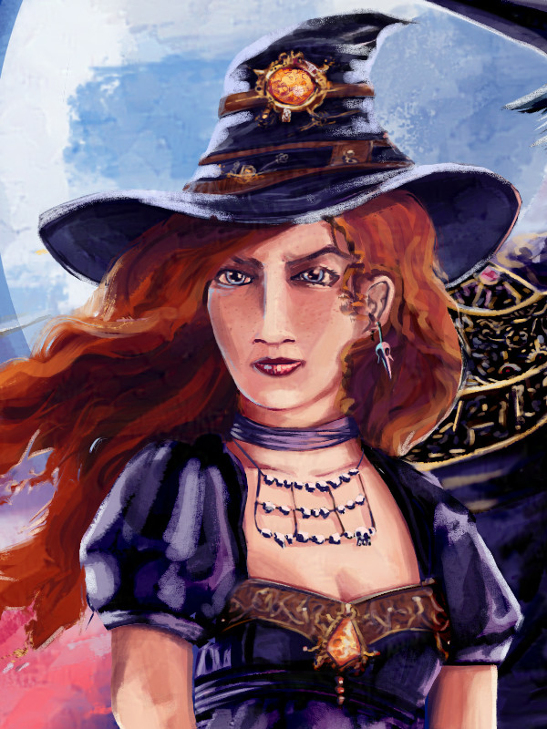

Tymely News
Work In Progress #15: She Seeks Peace #7 (October 21-25)
“I don’t get it.” Evie’s big brown eyes wobbled with doubt and glistened with imminent tears, “You say my friends are gone, but they’re right there!” She pointed at empty space, then adjusted her pointing finger to some empty air beside the Hunter, “You say Crayton is gone, but he’s here, too!”
– Excerpt from She Seeks Peace.
She Seeks Peace is volume 4 of Ashen Blades.
You can read a short description of She Seeks Peace to learn more or you can read short summaries of each day's writing on Mastodon
Here's links to the rest of my blog entries on She Seeks Peace, in chronological order:
Chapter 32: No Sanctuary
The upstairs portion of the The Last Sanctuary turns out to be nothing but mummified corpses and they head downstairs, finding the great hall a little different.
First, the fire is much smaller and there's a sort of nest of orange monk robes laid out, where someone has been sleeping. That's surrounded by little, hand-carved wood figures that are very artistic.
The bear statue has had a pair of glasses drawn on with charcoal and one whole wall is covered in charcoal drawings. They start primitive at one end and slowly transition to being very well made, hinting at a progression over time.
The incense is all gone, presumably all used up. The weapons and tools are rusty, but still serviceable, with sings someone has been looking after them.
Near the tree is a chopping block with an ax and carving knife (it's a magic tree that rapidly grows back, by the way, providing limitless wood for the fire).
The room smells of a child. The Hunter moves closer and sniffs the nest, confirming they sleep there.
They're surprised to hear a child ask, from behind, "What are you doing?"
The Hunter turns to look, but no one's there.
The child points out, from behind, "I'm not there."
Whirling again only causes the kid to giggle from all directions.
Yet again from behind: "Who are you and what’s that rittle furry thing on your shourder?"
Note the spelling. The kid pronounces L's as R's, using a Chinese accent.
The Hunter turns Mashu'ra around on her shoulder, so he can watch her back.
“You just gonna ignore me?” The child asks from every direction at once.
Tiring of the game, the Hunter closes her eyes, focusing her mind entirely on smell and magic. As it turns out, the kid is using a technique very similar to the Hunter's shadow-stepping spell, but instead of a mix of Smoke and Void magic, to make shadow, the kid uses Void mixed with Life, forming a ghost-walking spell.
The Hunter gets an idea where the child is next to appear, based on smell and magic, grabbing their clothes. The result is four years old, with brown eyes and a shaved head, in a child-sized orange robe.
Introductions reveal her name is Evie and it soon becomes clear the girl can see spirits and doesn't realize they're dead, because she asks "Who's the man in the gray suit?" and points at empty space.
They don't know, so she asks him and says he's "Crayton Simmons." The Hunter is shocked by the revelation that Simmons is so very close, yet so far away.
Evie points all over the room at people her guests can't see, naming them, including a mixture of Western,m Chinese and Russian names, though the name 'Will' turned into 'Wirr', which will probably confuse, not that it matters.
Eventually, Evie asks why they're there and Mashu'ra tells her they're supposed to take her to her family. She gets excited about it finally being time for "her adventure".
Like a child with a short attention span, she looks at the Hunter and asks if she ever speaks.
The Hunter nods and an amusing exchange happens, in which the Hunter intentionally baits Evie with the only phrase she can say, until she's annoyed the girl, getting her to ask, "Is that the only thing you can say?"
The Hunter nods and Evie grumbles, "That's annoying. You're annoying!"
The Hunter is quite pleased at this outcome, because she tries very hard to be so.
Evie briefly tries to erase the Hunter's curse, but fails, because it's "rearry strong".
Chapter 33: A New Lens
The Hunter leaves the Sanctuary with Evie in two, surprised to see that the courtyard hasn't changed, but the scene across from it has.
The rope bridge now crosses a creek instead of a deep chasm. The Hunter doesn't know it, but the Sanctuary connected them with an area near Alice Springs, Australia, because the magic of the Sanctuary sensed that was vaguely near where they needed to go.
The Hunter leaves the courtyard and steps onto the sandy bank of the Todd River. The background is desert scrub brush, including sparse grass, low brush and hardy trees.
S/he looks back, but the Sanctuary and rope bridge are gone, leaving her in a very short panic, thinking she's lost Evie.
Evie steps out of thin air beside her, amazed by everything she sees. After asking lots of questions, she wishes she could draw it, even though she left her "drawing warr" behind.
The Hunter gives her a clipboard with some paper and a box of crayons that came form the hat.
Evie draws the most violently-rainbow variation of the landscape, using every color she can, because she's never had colors to draw with before (she's used to charcoal).
After that, she draws it again, using more appropriate colors, and produces an image like unto a photograph, despite using only crayon. She makes a gift of it to the Hunter.
She wonders aloud what's next and Mashu'ra is forced to admit he's not sure, so Evie asks her grandmother, reveling the fact that the spirits of the monks followed.
After a pause (our heroes can't hear Evenlyn speaking), Evie says, "Yeah? I can do that."
She raises her arms and pours a mixture of Spirit and Void magic into the air, causing the landscape first to waver like a heat haze, then melt into a puddle like overheated crayons!
Mashu'ra and the Hunter get violently sick and she retches. Rolling on her back, she looks up at some monks, Evenlyn included, plus Simmons, standing over her and discussing her illness.
The magic reverses and the melted landscape flows upward, into the shape and form of a hill they're now on top of, which give them a nice view of Alice Springs (though they still don't know where they are).
There's a brief conversation in which Mashu'ra asks Evie to warn them before she does that again.
Evie settles in to draw, while the Hunter starts to cry, because seeing Simmons ripped her half-healed wounds open again. Evie notices her sobbing and hugs her (the Hunter's protective spells curiously don't stop that, indicating her mother refused to intervene).
Evie starts a discussion about the Hunter's tears and Mashu'ra tries to explain that she just lost a friend. Evie doesn't understand and they begin a long conversation about death, but the Hunter suspects Evie will not understand, because unlike everyone else, she doesn't perceive the divide between the living and the dead.
Chapter 34: No Home
Close to an hour late, Mashu'ra has made no progress getting Evie to understand the concept of death and he tries saying, "Ghosts can’t be touched by the living."
Evie proves him wrong by shaking the hand of the unseen ghost of Simmons, though she unknowingly uses a little magic to pull that off.
Mashur'a gives up, "You’ll understand when you’re older."
They decide to enter the city, but just as Mashu'ra is saying he'll be fairly quiet, he vanishes, whisked away by Lara summoning him.
Evie gets an explanation from one of the ghosts haunting them, most likely Simmons, though the Hunter only hears half the conversation.
The girl leads the way into the city, following directions given by her grandmother.
They arrive at a brick house and Evie knocks. A gruff-looking man answers, but smiles at Evie.
She asks if his surname is "Warrace".
He corrects her by saying "Wallace" and says yes.
Evie hugs his legs and says, "I ruv you, cousin!"
I've had a lot of fun with Evie's Chinese accent, so far, because it makes some of her words amusing and this struck me as one of the cutest things she's said so far.
The man pries her off and looks to the Hunter for an explanation, but Evie explains, "She can’t say much of anything, due to a magic curse."
The poor man looks at the both of them like they're insane and slowly back into his house, before shutting the door and presumably calling the police.
The Hunter grabs Evie's hand and takes here away from the place, while Evie asks if she did something wrong.
In the hunter's mind, it's more a matter of what she hadn't done wrong.
Again, one of the spirits explains, but this leaves the Hunter vaguely disquieted, because she isn't sure what they're telling the girl.
Meanwhile, Lara is in the New York branch office of the Order, helping with the cleanup and moving operation, while she waits.
She steps into Verda's office, noting the woman's bloodshot eyes, because she's hardly slept since Wrath exploded in her face.
They discuss Verda's fresh case of PTSD for a short while and Lara offers a little advice: Verda should go out and kill some weak demons, to do some good and reassure herself that she's not useless.
Verda agrees to try it.
There's also a brief internal momologue from Lara about her own experiences with PTSD (after she was rescued from Hell by her husband) and the way that very specifically didn't happen after she died and was transformed into a vengeful fey spirit, because fey don't get traumatized by death and instead seek revenge.
Verda asks if Lara has heard from Mashu'ra. The answer is no, so Verda suggests Lara try summoning him again, even though only three hours have passed; she wishes Artemis were around. That's a little hint that Verda would feel safe if Artemis were present, because she once killed Wrath.
Lara summons Mashu'ra into her body and relays recent events to Verda, who is very interested in The Last Sanctuary, which has been effectively sealed from the inside for 200 years.
Verda speaks of sending witches in through the "back entrance" to assess the place and get it running again.
Lara tells Mashu'ra she's on her way to Australia and releases him.
The scene ends with Verda asking if Lara needs a flight arranged.
Lara decides against it: “Nah. Shooting Wrath into space gave me an idea I’ve been looking for an excuse to try…”
What she's referring to will be revealed, later.
Getting back to the hunter and Evie, they've tried three more distant relatives of the Wallace bloodline, who (sadly) want nothing to do with her, though they were polite about it and her childish enthusiasm is starting to fade and she grows slightly older (I mean this literally, not figuratively) with each rejection.
They bump into a young woman in the street that's eager to talk to them, because they're obviously foreigners.
Evie learns a few new words/phrases, including 'American', 'Australia' and 'the world', each requiring explanation and the Hunter produces a globe from her hat as a visual aid.
This leads the woman to make a joke, "You the magician or the little one’s lovely assistant?"
Amused, the hunter leans into the idea and pulls Mashu'ra from her hat, grateful he's back, because she doesn't entirely trust the ghosts to give Evie current and correct information, even though Evelyn, at least, is oddly up to date on where her family is.
She does a ventriloquist-like act, allowing Mashu'ra to talk in her place, which actually works a little too well, drawing attention.
Meanwhile, Evie is confused, thinking the world and the globe are the same thing.
After an explanation of the difference, Evie shakes the globe and is very much relieved when it doesn't result in an earthquake.
The Hunter grows uncomfortable with the crowd she's accidentally drawn and leads Evie away.
When they're alone, Mashu'ra asks if they'd had any luck and Evie bursts into tears, because she feels like she has nowhere to belong.
The Hunter hugs the girl and finally realizes she's grown attached, much to her frustration. She'd intended to get the job of delivering Evie to family done, without emotional involvement.
Mashu'a comforts Evie. The Hunter also cries.
Chapter 35: Family
Evie and the Hunter are guided to several more homes of distant relatives by the ghost of Evelyn, but none of them works out, because the people in question have no room in their life for a random relative they didn't know existed.
They decide to quit for the night and Evie is directed by the ghost of Simmons to the local branch office of the Order.
They meet Riley Wallace, the man in charge of the place. On hearing his name, Evie runs to him and after a short explanation, he hugs her. Riley admits he saw Evelyn in a dream, months earlier, in which she asked him to look after a girl.
He wasn't sure about the dream, but his own grandmother (a witch) advised him to do as he was told, so he prepared a room in his home for her.
It's a rather emotional moment when he tells Evie she has a home. Evie is so happy, she cries profusely and thanks him.
Chapter 36: Brekky
Lara is on a sub-orbital spaceflight, in the form of a missile, the quickest option she knows to get to Australia.
At the apogee of her flight, she admires the incredible view of both the Earth and the stars.
She falls back into the atmosphere and changes form, to give herself a heat shield, sacrificing some skin to handle the friction of re-entry. Lara survives the friction burns and turns back into a missile for a while, performing a retrograde burn (reverse thrust) to slow herself down.
When the conditions are right, she turns into an eagle and flies to the ground, where she re-takes human form.
Her arms are badly burned and she's low on energy, so she lays down to relax and accidentally falls asleep.
Three aborigine men find her, two you fellows and one old guy. They saw her come down like a shooting star and even watched her change shape.
The first hypothesis floated is that she's an angel, like some catholic guys once mentioned to them.
Next, they consider the possibility that she's a monster.
The old guy eventually decides that no angel or monster would look English and finally settles on a correct answer: she's a witch, a kind of magic foreigner woman.
They still debate what they should do, but ultimately decide to help her, because she's less likely to harm helpful people, on top of it being the neighborly thing to do. They gather herbs and treat her wounds.
When she wakes, she's fully healed (mixture of medicinal herbs and her own regenerative magic). The local men have gotten a fire going and they sit on the opposite side of it, eyeing her. Not stated, but they put the fire between themselves and her as an extra measure of protection.
She thanks them and gets up to go, but her stomach growls and they kindly offer her brekky (Aussie slang for breakfast).
She's given a handful of live bugs to eat, including a fat caterpillar. Not wanting to be rude, she actually eats everything, though it all tastes disgusting.
The two young guys roll on the ground with laughter, while the old one produces a can of beans, a small cooking pot and a can opener, which he's been hiding behind himself.
He asks, “Would ya like some beans, mate? After what ya just ate, I can imagine ya’d like something normal to help ya forget.”
Lara can't help but laugh at their practical joke, while the old guy opens the can and dumps it in the pot.
Chapter 37: Home at Last
The Hunter waits for Evie to wake as morning arrives. Evie sleeps in a bedroom setup by Riley, wearing pajamas that feature a little, black-furred, helicopter pilot kitty, flying through a sky filled with violently-colorful stars and rainbows that offend and wound the Hunter's sense of fashion.
Evie goes from having the body of a prepubescent twelve year old to that of a fifteen year old, having matured a bit more in the instant before she wakes.
The Hunter helps her dress, because she needs assistance with certain feminine undergarments that hadn't previously been necessary. Riley stocked the closet of the bedroom with clothing ranging in age from infant to adult, because he didn't know the age of the girl he was to care for.
They step out of the bedroom, where Riley makes breakfast in the form of fried eggs. Evie tries an egg and pukes ten minutes later, demonstrating her digestive tract is setup the same as the Hunter's.
Riley and Evie talk and the Hunter gets up to leave, because she's finally certain Evie will be safe and secure. As the Hunter waves and opens the door to go, Evie finally comes to understand loss, in the form of losing a friend.
She begs the Hunter not to go and even offers to let her see Simmons if she'll stay, an obvious attempt at emotional manipulation.
A bargain is struck through gesture: the Hunter will stay for one day, then she leaves, regardless.
The spirits brow-beat Evie for her behavior and she apologizes to the Hunter for manipulating her feelings.
Eventually, Evie brings up the subject of death, because she wants to understand.
To address the subject, Riley takes them to a cemetery and the grave of his parents, who died in a car accident the year before.
He explains that their bodies are buried there and why (mostly cleanliness).
As a result of the conversation, he mentions "passing on" and Evie asks for an explanation of that concept.
Riley explains his views of the afterlife and a primitive variation of eternal joy vs. eternal punishment.
Evie asks why her friends haven't passed on and Riley suggests she ask them.
Riley and the Hunter step back, while Evie does exactly that, for quite some time. Evie begins to cry at what she learns from them.
She returns to her living companions with a guilty expression and explains they haven't passed on, because she won't let them (it's a mixture of their own unfinished business, needing to see Evie safe and happy, plus her magic anchoring them to the living world).
She's deeply troubled by the idea of letting go of her friends.
Tags: writing, work-in-progress, ashen-blades
Work In Progress #14: She Seeks Peace #6 (October 14-18)
She Seeks Peace is volume 4 of Ashen Blades.
You can read a short description of She Seeks Peace to learn more or you can read short summaries of each day's writing on Mastodon
Here's links to the rest of my blog entries on She Seeks Peace, in chronological order:
Chapter 26: …in the Depths
The Hunter stirs from her recollections as a single-engine prop plane fights to climb above Everest, only for the door to be kicked open with demonic strength, allowing Ulmoch to jump out, while the plane crashes into the side of the mountain, causing an avalanche that consumes several climbers!
Naturally, the Hunter is furious and finally angry enough to kill him, but Everest isn't a good place for her to fight (too little energy), so she vanishes into a puff of smoke, shadow-stepping away.
Ulmoch and Sogliun have a conversation about the "gift" Ulmoch got for the Hunter and it's revealed to be a mason jar full of clear liquid, though Ulmoch won't explain any further.
Sogliun asks, "Do you have any idea how annoying you are?"
Ulmoch grins.
Sogliun laments, "I hate you."
After a scene change and a very long fall, the hunter touches down at the Challenger Deep of the Mariana Trench. She was forced to kill a giant squid along the way, because it tried to eat her. She also saw an angler fish.
Her clothes have become a thick wetsuit, to keep her warm, and she uses the power of the Air Spirit to oxygenate her blood, since there's no air to breathe and the pressure is too high for a helmet.
Touching the sea floor produces a cloud of muck, so she chooses to swim.
She sees a hydrothermal vent in the distance and swims that direction, finding warmer water, a carpet of microorganisms and an occasional crab, plus some very unconventional fish.
She sees flowers in the distance and rushes over, discovering they're not actually flowers, but tube worms, with red at the top and white tubes they can withdrawn into, when threatened.
Staring at the tube worms, she settles on a boulder and stares at them as her mind wanders backwards, to a time and place full of red flowers.
Chapter 27: Plain Sight
Returning to the Hunter's flashback on her time in Canada with Simmons, they stand in a field of red daisies.
Simmons is lost and has been for hours, but has been refusing to admit it, while the Hunter finds it funny, because he keeps turning his map at new angles. He ends her amusement by finally saying it and asks if her nose tells her anything.
She takes a deep whiff and picks up the scent of smoke on the wind.
She leads them to a cabin between a dirt road and a forest, where a man chops wood.
Simmons introduces himself and the man says his name is Brady Roberts.
Simmons asks for directions back to civilization and the guy points to the south, saying, "About a hundred miles that way."
Seeing his expression and knowing they're on foot, Brady offers to get on the radio about their situation.
He spends about ten minutes inside and comes back out, saying he's spoken with their friends, who will be along tomorrow, because they had car trouble.
He passes along a message: "The abominable Snowman is still at large."
The Hunter recognizes the code name for the demon they're hunting, which means the monster evaded all nine teams, four of which had witches that were experts at tracking demon magic.
The Hunter's internal monologue reminds the reader of the peculiar demons from the summer camp incident (during events of the novella She Goes to Summer Camp), who were masked by magic that made them dang near impossible to detect with magic, even allowing them to pass the Hunter's sniff test.
Some few of those frog demons born on Earth were able to survive their mother's death, but only the very strongest, hinting that their quarry may be one of them.
Brady offers to put them up for the night.
Brady says "we" several times during the conversation, which will become an important point (he doesn't live alone).
They all go inside and Brady chatters away as if he's lonely (he is), giving them both some coffee.
The Hunter initially suspects Brady of being a magically masked demon and sniffs the coffee for poison, but finds it safe.
While Simmons and Brady talk, she decides she likes the smell of it and drinks some, as an experiment. It makes her anxious and paranoid, with bloodshot eyes.
The Hunter eyes Brady with suspicion, thinking he's subconsciously tracing demonic symbols on his knee, then when he puts his head in his hand, she thinks his idle finger movements are designed to control some spell.
In essence, her imagination fills in the blanks on how his every action could be demonic.
Eventually, Brady comments on the way she's giving him the stink eye. Simmons notices the way she's acting and the empty coffee mug, surprised she drank it.
He apologizes by pointing out the fact she's never had coffee before and Brady goes back to being generally friendly and good-humored, blowing it off as something like his own first mug at the age of 12 (up all night).
The Hunter turns a little introspective on the matter and decides she doesn't like coffee, vowing never to drink it again.
She also realizes it enhanced her natural paranoia (demons try to kill her quite often), until she found a human to be suspicious.
Brady's co-worker, Elijah, arrives and says, "The last of the seeds are-"
Brady interrupts, saying their guests don't need to know the boring details.
Elijah turns his head and stares at the Hunter with terror for a brief instant, but she chooses to ignore it, thinking it's another bit of coffee-induced paranoia.
She continually chooses to ignore warning signs from Elijah, until the man says it's time for bed (the light from outside is fading).
He gets a pair of sleeping bags from his room.
They say their good nights and our heroes bed down on the floor, while the Hunter pretends to sleep.
She focuses her mind (the coffee is helpful for keeping her mind on task) and pays close attention to her senses, just in case the things she's been seeing were real.
She assumes if one of their hosts is a demon, they'll attack in the night.
Hours pass in sheer boredom.
The Hunter is vindicated when Elijah exits his room in frog demon form and opens his mouth extra wide, to swallow her whole.
She swings her sword sideways, out of the sleeping bag, and puts the tip to the soft bits at the roof of the frog demon's mouth, just below his brain.
She wakes Simmons and an interrogation session begins.
The demon initially refuses to cooperate, so the Hunter cuts his arms off. They don't evaporate like usual, by the way.
He blubbers and begs, agreeing to answer.
Unfortunately, just as he starts an explanation, he drops dead. Like his arms, he doesn't evaporate, because he's a leftover frog demon from She Goes to Summer Camp, which were spawned on Earth and have much more physical/less magical forms than the garden variety of demon.
Brady walks in, having been woken by the commotion, screaming at the sight of the corpse, asking if it's an alien.
The Hunter drags the dead demon outside, while Simmons explains, being honest.
The Hunter buries the body in the woods.
Chapter 28: Perspective
Lara has setup camp, including a tent, camp chair and a steel barrel with a fire in it, but the odd part is where she is: the underside of the Whitestone bridge, in New York City.
She used a spell to made the underside of the bridge attract things, similar to gravity, so she hangs upside-down, above the East River.
Unable to sleep, she decides to enjoy the fire and roast some marshmallows.
To that end, she uses her shape-changing magic to turn her finger into a a long, steel wire, similar to that of a roasting fork.
She impales three marshmallows on it and roasts them, only for Ulmoch to interrupt, saying, "Neat trick!"
Naturally, she turns her arms into Tommy guns and opens fire as Ulmoch leaps her direction!
He dodges her bullets until he reaches the attraction spell, losing his balance!
Ulmoch is riddled full of holes until he starts moaning with pleasure about how good it feels, causing Lara to stop, bothered by his masochism.
He reveals the existence of the bounties on both her head and that of the Hunter. He even tells her that Wrath is "in love" with the Hunter.
He spits out bullets several times along the way, especially when he laughs, because his lungs are full of them.
Laura kills him, collects her things and flies off, letting the corpse fall into the East River.
Sogliun watches Lara fly off, feeling suspicious about Ulmoch's motives. After all, he works for Pride and he only paid Sogliun to find Lara once, rather than a long-term deal like he negotiated to find the Hunter.
The smoky demon can't help but wonder what's really going on...
Meanwhile, Lara sets down in an alley and summons Mashu'ra, demanding to know where the Hunter is. He tells her the truth: bottom of the ocean, meaning she's out of reach (Mashu'ra can't survive where she is).
Mashu'ra offers to deliver a message, once he can safely pop out of the hat.
Lara explains everything she just learned, though it's left as a trailing sentence, to avoid repetition and loss of reader interest.
Chapter 29: …in Meditation
The Hunter's private thoughts are interrupted by the roar of a great cat, despite being at the bottom of the Pacific, and her mind is filled with the sound of animals of every shape and size.
By entering a place only inhabited by animals, she's drawn the attention of the Animal Spirit, which wishes to punish her for holding its siblings captive.
The Hunter puts out her light and shadow-steps away.
In the next scene, she's high in the mountains, fighting a blizzard. She's undeterred, because she enjoys the challenge. This is the third mountain she's searched for a place she heard about in rumor, in the halls of the New York branch office of the Order, which is supposed to be very quiet and peaceful.
She turns a corner of the mountain and sees the broken rope bridge leading to her destination. She doesn't give up and flies.
The wind nearly knocks her form the air several times, because the blizzard is that intense, but she reaches the walled courtyard of an ancient temple, setting down in the crunching snow.
In an instant, the weather is clear and the mounds of snow covering the place are gone. She looks with confusion at the intact rope bridge.
Her senses tell her that the fading magic she feels was an Illusion she just pierced.
The temple doors open and orange-robed, bald monks invite her to enter.
Inside, the tile floor depicts the elements of witch magic in grand fashion: air, earth, fire, water, smoke, metal, wood, animal, life and the void. It even has some small, nearly missed symbols representing the void-touched elements: vacuum, shadow, the all-consuming (ultraviolet) flame, poison, ash, bone, ice and blood.
She's welcomed to The Last Sanctuary and told she's been expected for some time.
She's surprised, because no one was told she was coming, though the monks are Ashen Blades.
The monk says, "The Master of the sanctuary would like to speak with you, but she’s very old and currently sleeping. We will inform you when she’s ready. For now, relax. Meditate on the peace and comfort you seek.”
The Hunter is curious to learn more, but for once, she's willing to be patient, because she has her own issues to focus on. She settles in by the fire and stares into it, letting her mind wander to the past.
Chapter 30: Questioning
The Hunter returns to the cabin as Simmons puts some fresh logs into the wood stove. (purely there for another cinematic fade)
Simmons questions Brady, because he has his doubts about the man being human, but isn't convinced he's a demon, either.
He reasons for a time about Brady, tallying points of evidence in his mind as they talk about the dead demon.
After a while, Simmons settles on an approach that occurred to him just before the last frog demon he hunted revealed themselves.
He claims he needs more information about Brady for his records and begins a formal interview over Brady's identity, eventually dovetailing into a psychological questionnaire, during which he asks Brady to close his eyes and say the first thing that comes to mind.
Eventually, Simmons throws in this question: "How long have you been on Earth?"
Brady answers, "Seven years."
Even Brady realizes what Simmons just did, though he's too late to take it back and drops the illusion of humanity, reveling himself to be a huge, muscular frog demon, much larger than average (all that wood chopping must have paid off). I like to think of Brady as a lumber-jack demon.
At the same time, Simmons mutters, "Mashu'ra!"
The two of them explode out the side of the cabin! Incidentally, this scares a moose that wandered by the cabin.
They end up lying prone as Simmons sinks the claws of his hands in and rakes with his back feet!
The frog takes the worst of it and begs for his life, bringing the fight to a close. He's been halfway disemboweled and is quite helpless for the time being.
Simmons gets some answers: the demons were spreading their offspring (the demon pretending to be Elijah was female) in nearby lakes and rivers and Brady was the strongest of them, having taken over the hivemind, after the death of their mother.
As the demon begs for his life, Simmons crushes his head with a foot.
Simmons drags the body into the woods, for burial, while the Hunter watches him go, glad she accepted human companionship and grateful Simmons is so strong and smart, more or less the perfect partner for her work.
She reasons he'll never die by anything other than natural causes and that fate is surely thousands of years away.
She's content that with him by her side, she'll always be happy.
Chapter 31: …Anywhere
The Hunter is stirred from her memories by Mashu'ra appearing on her shoulder, to deliver news of the things Lara learned.
The Hunter is disgusted by the idea than Wrath wants to marry her, making fake retching noises.
The kitten demon asks if she'd be willing to stand beside Lara, to face the bounty hunters together and she agrees.
As she holds Mashu'ra and pets him, she concludes she's done wandering, ready to face her grief with a friend by her side.
She still doesn't know how to cope with the idea of eventually losing all of her human friends, but she's ready to look for that path forward.
One of the monks politely interrupts and tells her, "The Master of the Sanctuary will see you now."
He leads the way toward the spiral stairs around the central column of the room (I did some editing to add it).
I like the implication of that column and its stairs: the way up (enlightenment) requires walking the path of life.
Part 3: Losing Buoyancy
The end of chapter 31 marks the end of Part 2.
Part 1, Untethered, was about Reggie and setting the stage with Wrath.
Part 2, Tossed on the Wind, was about Simmons and the Hunter's journey as she learns to grieve, instead of stuffing her feelings.
Part 3 will focus on her journey toward acceptance of loss as part of the cycle of life as she cares for a young child.
Part 4, Grounded, will focus specifically on the climax and conclusion of the conflict with Wrath. It will also bring the Hunter and Lara back together, with a stronger bond than ever.
The names of each part evoke the journey of a balloon and the grief of a child at losing it, as a metaphor for loss. The balloon represents Simmons and the child represents the Hunter.
First the balloon is accidentally released, leading to a crying fit, then the child watches their toy as it's buffeted by the wind and blown away, though they still feel the loss. Eventually, the balloon loses helium and starts to come down, while the child moves on with their life. Finally, the balloon comes back down to the ground, but by that point, the child has usually either forgotten their balloon or accepted the idea they'll never get it back.
Chapter 32: No Sanctuary
Mashu'ra and the Hunter are led to the old witch in charge, Evelyn Wallace, who speaks with an Australian accent.
She tells them a little about The Last Sanctuary: it's a magical place like The Cauldron of the Elements, but unlike that place of nature, it's a made thing, made by witches. It's also a pocket dimension, accessible from anywhere.
Evenlyn tells them a tale about an Ashen Blade witch that fought a war against a demon that sought to oust Pride from his throne, by destroying the world before Pride's circuitous portal-to-hell plan could be realized.
Eventually, this witch sought more power, that she might win, and summoned Pride/Vogerath, reasoning that "the enemy of my enemy is my friend." She made a deal with him and became a demon witch, but part of the bargain was that she would bear a child.
Internally, she vowed to never do so. After all, in her era, women were not well respected as they are now and she hated them. She was also very head-strong, as witches tend to be, too much so to accept a man. Ironically, her personal pride may have been her downfall.
She won her war against her personal nemesis, but was rejected by the Ashen Blades, for having willingly become a demon.
She wandered and sought solace in strong drink. At one point, she lay drunk in the street and was raped, leading to pregnancy and birth of a daughter.
Determined to keep the baby safe, she sought The Last Sanctuary, but not for herself. In truth, the place cannot be found by a demon, though it will become apparent there is still one way they can find their way in, through the human heart.
She couldn't find the way, but her infant pointed the way and she reached the threshold. Evelyn met her there and refused entry.
The witch explained how she'd gotten there. Evelyn accepted the child and started to ask the witch to leave, but she'd already turned away.
Evelyn admits, through tears, that she turned her own daughter away, implying the half-demon infant was her granddaughter.
Mashu'ra asks how long ago the child was born and is told, "After your old master freed Pride to return to Earth, but before your current master was born."
Mashu'ra doesn't believe her, because that would make Evelyn far older than the Hunter, who was born 126 years earlier!
Evenlyn says, "Aren’t you a clever little imp?"
The Hunter blinks involuntarily and the room goes dark.
When she gets a magic light going, she looks on the corpse of Evelyn, who's clearly been dead for decades, if not centuries. The room is also full of cobwebs, which incidentally block the way out.
The ghost of Evelyn touches their minds, saying, "Take my granddaughter to my family, in Australia. It’s time she finally grew up a little."
They explore the place, finding many more bodies, all with signs of violence, ranging from blade wounds, to teeth and claws.
Mashu'ra investigates one of them, concluding it's the work of a fairly unique demon that goes by the name Muglon, who had a way of getting into any human head, because he didn't favor any given sin.
Worse, Muglon was/is able to jump from body to body, possessing humans with ease, not even requiring them to fully succumb to their sins, in order for him to fully possess them.
He was a generalist. It isn't stated, but Muglon was actually using the insanity basis of sin as the means into the human mind, so any sin at all was a doorway for him.
It's implied that one of the monks committed some sin that brought Muglon to the sanctuary and that was their downfall, leading to fighting.
This chapter isn't done, but I'll continue it on Monday.
Future Plans
The final elements of the novel are now fairly sharp in my mind and I have a strong idea of how the climax will shape up, but as ever and demonstrated by Chapter 32, all things are subject to change.
The Child
I'd originally planned to saddle the Hunter with a totally human child, but now know she'll be dealing with a half-demon girl, who's much like her.
This child has potent abilities, with a particular focus on Life magic. She's most talented with Spirit magic. The reason the Hunter initially saw the Sanctuary as it appeared in the past is because the child was the one to kill the demon and she was left alone, so she summoned the spirits of her fallen friends, to keep her company. With so many strong ghosts around, reality was warped to make the present appear like the past, up until Mashu'ra pierced the illusion with cold logic.
Since she's mentally three or four years old, when asked about the demon, the girl's explanation will be, "I made it go away."
The real truth will be that she either ate it or hit it with such a potent blast of pure life magic, it was unmade. Ironically, while demons use Life magic to enter the human mind, it's also antithetical to their core nature and can be quite dangerous to them. Ironically, if Verda knew that (she doesn't), she'd blast away.
The Hunter will take the child to Australia and over the course of days, they'll search for her still-living family, while the child grows older, the more she learns.
Half-demons don't mature at the usual pace of humans and their outward appearance changes to match their internal state. That's why the Hunter has grown mature so slowly, but in sharp spurts. It's also why she'll probably always look like a teen; if I have any say in the matter, she will never lose her childish nature, which will keep her young.
By the time they find the girl's family, she'll be an adult. She'll spend a few hours with them, then rapidly grow older, until she's a withered, old woman. She'll die happy and content. The reason for this is that her Spirit magic gives her a very strong connection to and understanding of spirits and with her final desire in life complete, she's ready to face the great beyond.
My intent in this is that the Hunter will slowly grow to love this girl, thinking she'll be a friend she can keep forever, only to see her hopes dashed, but in seeing her friend pass on, she'll come to realize that life isn't about the destination, but rather the journey along the way.
She'll come away from the experience with an acceptance of that journey and view her friends in a new light: she'll value the limited time she has with them, rather than worrying about the pain of losing them.
She'll also fully accept the name Simmons gave her in the previous book, coming to think of herself as Artemis Watson. She hasn't been using it, because it's been a painful reminder that he's gone.
The Climax
The final events of the novel will happen quickly, once the half-demon child is gone. The Hunter will be in some city of Australia, where Ulmoch will catch up to her. He'll lead her on a merry chase, until she bursts into a place he's prepared to fight her.
As she bursts in, he'll open her "present", which is a jar with at least a pint of LSD in it, splashing it all over the both of them. He hopes the massive dose will mess her up so badly, that she'll either pass out or try to sleep off the hallucinations.
I don't want to spoil the outcome, just yet, but it both will and won't go according to plan. He'll be killed, of course, but that doesn't matter very much.
She'll eventually lay down to sleep it off and that's when Wrath's people will capture her. They'll take her to Wrath and he'll summon the guests (the other arch demons).
Lust's plan to split the Hunter in two will work, but not quite as expected, due to a recent change in her mental landscape, ruining all of Lust's calculations about her final position(s) and the Hunter won't appear in the binding circles Lust prepared.
Lara will show up about the same time and all heck will break loose. The Hunter's inner demon and Lara will form a brief alliance, in which they cut loose at full strength on both Wrath and the arches, enjoying the target-rich environment.
Incidentally, Wrath will get his head punched off by the demon, landing far away, in the outback. As he lays there, helpless, Pride will come along. Wrath will request help (he can't move his body without his head attached) and Pride will eat him.
Meanwhile the Hunter's human side will be far too sick to function, because she lacks some vital (human) DNA and cellular machinery that had been replaced by her demon side.
Then comes the part I haven't quite figured out, yet: how will the Hunter be put back together? The demon will resist, because it wants to be free, and Lara will be smacked aside, once they reach that disagreement.
The Hunter will probably be forced to fight the demon, sick or not. The power of the elemental spirits in her head will help (they stayed with her human half, because they despise the demon, based on the way she once ate the Water Spirit).
It will probably take the combined efforts of Lara, Mashu'ra, the Hunter, her parents and a character I don't want to spoil coming together, as a team, with each of them holding one piece of the puzzle. It will probably have to happen inside the Hunter's hat.
The Ending
Lara and the Hunter will go home together, each vowing to be more sensitive to the feelings of the other. I think the epilogue might involve the Hunter learning to care for Lara's son, James, so she can serve as his babysitter and give Lara a break from time to time.
Tags: writing, work-in-progress, ashen-blades
Work In Progress #13: She Seeks Peace #5 (October 7-11)
She Seeks Peace is volume 4 of Ashen Blades.
You can read a short description of She Seeks Peace to learn more or you can read short summaries of each day's writing on Mastodon
Here's links to the rest of my blog entries on She Seeks Peace, in chronological order:
Chapter 19: Confluence of Sin
I continued this chapter from where I left off, last week.
After seeing the 1000 soul bounty posted for the Hunter's capture, Ulmoch contacts Pride to ask permission to accept the contract. Pride says yes, but also requires him to do exactly as he says...
I intentionally left his instructions to the imagination, but they'll become apparent during the climax.
From there, I did wedding invitations:
Gluttony
Gluttony is in her throne room, which she's combined with a corporate conference room, for modern times, all decorated with obsidian and gold, with a boardroom style table at the center.
She's slimmed down for modern times and wears a gray business suit with a skirt. Corporate overspending and waste are the modern equivalent to eating too much.
Her modernization started with a conspiracy between light bulb manufacturers making their products disposable, but that spread to making everything disposable, with plastic being a huge part of that. In her internal monologue, the oil tycoons were wasteful on their own, needing little demonic push.
She sits at her huge table, which has been set with a meal consisting of three live imps, in the form of a boar, a turkey and a piglet, all tied up.
Each has been condemned to death by Gluttony for refusing to be her meal (that's what they were raised for). Ironically, the outcome is the same.
Just as she raises the piglet to bite, an illusion of Sergeant Thilvod (the stag demon Sogliun spoke with to get an appointment with Wrath) appears.
He invites Gluttony to Wrath's wedding. There's some discussion of catering (Wrath hasn't done this yet) and Gluttony offers to provide the food, mostly so she can avoid Wrath dumping a box of MREs on the food table, which is exactly what he would have done, if left to his own devices.
I have plans for Gluttony in a later book, so this serves as a bit of foreshadowing.
Greed
Greed is in his own throne room, which is also his treasury. He dresses somewhat like a street-level member of a gang, but with far more expensive clothes, including a pistol in his waistband and some gold chains. The only odd bit is his tricorn hat, a fond left-over from the days he was a pirate.
He's busy using a laptop from the human world, which is connected to the internet via a gremlin-possessed DSL modem.
His plans involve pouring magic into the internet, but it isn't explained. Again, I'm doing a little foreshadowing for a later book.
He's also interrupted by Sergeant Thilvod inviting him to the wedding.
Envy
Envy is next, but I carefully pointed out to the reader that Envy is actually one of Pride's bodies in disguise, because he ate her in 1972, during the second book.
He/she wears a ring that blocks that particular body from being tracked by the Thaumavore, a unique trinket he can't reproduce.
Sergeant Thilvod appears and invites Envy to the wedding.
Sloth
Sloth is woken by a servant. He appears as a puddle of foul, black slime at the center of a circular room lined with shelves. Those hold crystals that change shape and color over time, because they're physical manifestations of the dreams of humanity.
Sloth manipulates humans through their dreams, mostly in a for-hire fashion, the most famous example of which are Lust's succubi.
Sloth himself, on the other hand, favors driving men mad in their dreams. He admits to himself that he recognizes the existence of the eighth deadly sin, willful insanity, because he uses it in his work.
Thilvod has appeared to invite Sloth to the wedding. Sloth is happy to hear the news, because he and Wrath are friends; when people go mad, they often start killing, so he and Wrath work hand in hand on those cases.
With the invitation extended, the image of Thilvod vanishes and Sloth yells for lots of coffee, because he doesn't want to sleep through Wrath's summons, when the time comes.
Pride
When Thilvod appears to Pride, he smugly interrupts, "Of course I’ll go to my old friend’s wedding, just so long as it’s on Earth. I’m not returning to Hell until the Thaumavore is dead. When and where?"
Thilvod tells him, "The Australian Outback. I’ll provide more exact coordinates when the time is right."
Chapter 20: …in the Rainforest
The Hunter's thoughts are interrupted by the crazed cry of Ulmoch, who was brought to Giza by Sogliun. As it turns out, Sogliun can track the very distinctive feel of her life energy, which he's more sensitive to than any other demon.
She's not in the mood, so she flies off, while Ulmoch tries to taunt her into a fight.
In the next scene, the Hunter slashes her way through the Amazon rainforest, comparing it to the jungles of Vietnam.
She stumbles on an ancient, Aztec city, which includes a pyramid, a fact that amuses her, because she thought she'd left pyramids behind, in Egypt.
She climbs on the roof of the temple at the top and sits on the corner, admiring the view, because she can see pretty far, including the Amazon river as it winds back and forth.
Her mind is drawn to the past, to her time with Simmons in the jungles of Vietnam.
Between this and the opening of the next chapter, this would make for a nice cinematic dissolve, were it done in a TV show or movie, transitioning from a view of the rainforest to a view of the jungle.
Chapter 21: The Last China Shop
The Hunter and Simmons are in the jungles of Vietnam, in 1973, on their last search and destroy mission in the country, accompanied by Staff Sergeant Greer and his men, the long-range patrol that stayed with them while they were there.
She sniffs out a demon nest Verda located on a map with magic.
There's a brief disagreement between Simmons and the Hunter over who goes inside first, since the cave entrance is only wide enough for one at a time, so they decide to settle it with a game of Rock, Paper, Scissors.
However, Simmons (correctly) accuses her of cheating; she's been using her extremely-fast mind and reflexes to read his muscles before he moves, so she can choose a winning move, every time. It only worked because she's known him for thirty years, demonstrating how well she reads him.
Simmons insists they both close their eyes to make the game fair and the Hunter reluctantly obeys. She chooses scissors and Simmons goes with rock, so he gets to go first. Naturally, she's very annoyed, since she's always been a sore loser, but she lets it go, because it's Simmons.
They enter the cave, while Simmons unwisely uses a flashlight (tunnel rats didn't use flashlights unless they had to, because the Viet Cong were used to working in total darkness, so a light would give the enemy the advantage).
Simmons takes full-auto AK-47 fire from three demons, but isn't permanently affected, spitting out some slugs, while the rest fall off his magic suit, which can shrug off small arms fire. He goes total ape-crap on one demon (the pain forced him into a berserk fit), while the Hunter dispatches the other two with a bit of swordplay.
They head deeper inside, while the Hunter considers how happy she is to have such an indestructible partner.
When they emerge from the cave, they're informed it's time to head back to the world (Army slang for home/out of the war), because Verda says they've wiped out the last nest they can reasonably reach.
The Hunter considers the meaning of 'home', realizing she was never homesick in Vietnam, because she'll always feel at home with Simmons by her side.
Chapter 22: Rescue
Wrath rescues Lust and takes her to the abandoned mine that serves as his current base in the Australian Outback.
They discuss what he wants from his relationship with the Hunter, coming to some conclusions:
- She will never be willing and would rather kill him.
- He wants a long-term relationship, not a single night.
Lust forms a plan accordingly, which consists of an enchanted engagement ring that will force the Hunter to split in half by forcing the activation of the power she stole by eating Pride during previous books.
The ring will cause the Hunter to split into her human and demon halves, each of them pure and unsullied by the other.
The next half of Lust's plan involves an enchanted wedding band that will bind the demon's will to Wrath, so he can order her to love him.
Before Wrath leaves to obtain the required supplies, Lust's stomach growls, so he asks Thilvod to bring her a meal, a living human being.
At the end of the previous book, Lust was given a copy of the Book of Mormon, which she's been reading a bit here and there in this book. She reached 3 Nephi 11 at the start of the chapter and felt something powerful as a result (the presence of the Holy Ghost).
Seeing her "meal", Lust is disgusted by the thought of killing and eating the man. She refuses, claiming she's gotten used to the taste of beef during her incarceration (a half-truth), though she picks her words very carefully, lest Thilvod suspect her of feeling compassion, which demons have been known to kill each other over.
Thivold takes the man away and returns with some MREs that feature beef. Lust eats while working on calculations related to her enchanting work.
Chapter 23: …on Top of the World
The Hunter's thoughts are once more interrupted by the voice of Ulmoch, causing her to groan as he leaps from the trees to the roof the the temple she's sitting on.
She immediately flies off, while he tells her he got her an expensive present, which required killing a lot of "guys he liked" to obtain.
Her response is to go super-sonic.
In the next scene, the Hunter climbs Everest, hoping the remote location will keep everyone away from her.
She sits at the peak and stares at the horizon as the chapter ends.
Chapter 24: Airdrop
Were this a movie, I imagine a dissolve from one horizon to another, though with a military plane in the air (the kind used for airdrops).
It's 1989 and the Hunter is in a military plane in the air above Canada, preparing to parachute to the ground, because there's a demon hiding somewhere in a remote and snowy mountain range.
Naturally, the Hunter is sick and on her fifth barf bag, since the combination of low life energy and the motion of a plane get her every time.
Simmons gleefully jumps out of the plane with a whoop of delight, because being indestructible has made him adventurous.
The Hunter nervously steps up to jump, but hesitates, because her last drop from a plane went badly. The plane hits some turbulence and she loses her balance, falling out of the plane before she's ready! She screams and panics, forgetting what she's supposed to do!
She passes Simmons on the way down, since he's got his limbs wide, to slow down, so he angles himself through the air (he's gone skydiving many times before) to catch up to her, yelling for her to calm down.
They link up in the air and Simmons pulls her ripcord for her, ensuring her safety.
As he turns to look back down, he realizes he's too late to pull his own ripcord and screams, "Mashu'ra!"
He hits the ground mid-transformation to his cat-man form, but that's enough to save his life.
The Hunter lands and rolls back to her feet in one fluid movement, only to get hit in the face by her parachute, which pulls her off her feet and drags her on the wind!
She cuts herself free with her sword.
She follows her nose to Simmons, finding him groaning at the bottom of a small crater in the snow, with all four limbs badly broken. She helps him by lining his bones up, while Mashu'ra's power heals him.
When he's done healing, he releases Mashu'ra and returns to normal size.
The Hunter can't smell any trace of demon and they conclude they're in the wrong place. There were eight other teams being dropped all over the range, so no big deal.
Simmons produces a map and leads the way.
Chapter 25: Safe and Secure
Lara enters the Cauldron of the Elements, the same remote valley the Hunter sought some peace and quiet in.
Lara is worried that Wrath is coming to kill her and came to the valley, because she can think of no safer place to leave her son.
She bumps into Ignacio Greer, who settled there after the events of She Goes to Summer Camp.
They discuss current events, including Artemis (another name for the Hunter) being missing and Greer explains that Macie saw her in the valley, seemingly looking for some peace and quiet.
Lara explains her current situation and her worries, asking Greer and Macie to care her son.
Greer accepts and assures her that James will be looked after (Greer helped his Mom care for three younger brothers).
Tags: writing, work-in-progress, ashen-blades
Work In Progress #12: She Seeks Peace #4 (September 30-October 4)
She Seeks Peace is volume 4 of Ashen Blades.
You can read a short description of She Seeks Peace to learn more or you can read short summaries of each day's writing on Mastodon
Here's links to the rest of my blog entries on She Seeks Peace, in chronological order:
Part 2: Tossed on the Wind
At some point, I went back and added a heading for part one between the prologue and chapter one, titled 'Untethered'. I continued that trend by inserting the beginning of part two between chapters 10 and 11, allowing Moonshot to serve as the climax of the first part.
These part titles allude to a balloon, which I'll continue to reference in further parts. Part three will probably be 'Losing Buoyancy' or 'Coming Down', and part four will be 'Grounded'. Part four will be short compared to the rest, largely consisting of just the climax.
Having had a little inspiration for a chapter naming theme for part two, chapter 11 was renamed from 'Unthinking Concern' to 'No Peace…'
The intent is to use a series of short chapters describing where the Hunter is seeking peace, each named like so '…in/on/doing X', with X being her location or activity. Between each such chapter, there will be a chapter detailing a flashback to her earliest days with Simmons.
Chapter 12: …in Paradise
The Hunter arrives at a deserted tropical island, which is a beautiful, peaceful place, allowing her to settle in for some deep, emotional thought. She thinks back on her first case with Simmons.
Meanwhile, a shark demon spots her swimming to the island and approaches from downwind, so she can't smell him…
Chapter 13: Simmons
This chapter centers around introducing Simmons to the story, at the very start of the first case he and the Hunter ever worked together.
He sits in Reggie's old office, feeling like he's wearing another man's drawers (in more modern terms, that would be underwear).
Another detective agency has taken Reggie's caseload, to give Simmons the chance to ease into the work.
He reviews a case file given to him by the other agency, one they selected to show him the ropes, which is the bread and butter of detective agencies: a client needs proof of their unfaithful spouse's infidelity.
After reviewing the file, he decides a little photographic evidence would be just the thing, so Simmons asks the Hunter if Reggie had a camera. She leads him to a filing cabinet with one tucked inside, including film that's ready to use.
Simmons likes the look of the Robot II, a German-made camera that was first made in 1938, which makes it an unusual specimen in 1942 New York, but its nature as a clockwork device that can take photos in rapid succession made it perfect for detective work and too hard to resist putting in the novel.
He takes it into the bathroom and loads some film in the dark.
With the camera loaded, he winds it and steps out, aims at the Hunter and requests, "Say 'cheese'."
Quite naturally, she flips him off, since she can't say the word.
He apologizes and tries again, "Can I get a smile?"
She gives him a terrible rictus of a grin, as a mockery of his request. Knowing he won't get her real cooperation, because he annoyed her, he snaps the shot.
Chapter 14: …Underground
The Hunter is approached from behind by the shark demon, but the wind changes and she smells him coming before he can attack, which may or may not have been her mother manipulating random chance. She cuts him in half and, her peace lost, she gets back into the water, swimming down, for the dark depths.
In the next scene, she's in Carlsbad Cavern, stepping from one shadow to another, to avoid tourists.
The Hunter uses the natural cave entrance to enter, bothered by the smell of bird crap, since they gather there.
She shadow-steps to avoid the tourists and go deeper, surprised by the reverential hush of the people, mentally comparing the cave to a sacred place.
She does a little sight-seeing, then goes deeper, to find a dark place to think, reflecting on her first real adventure with Simmons.
Chapter 15: Private Eye
Simmons and the Hunter lurk on a rooftop, peering through a window into an apartment.
The Hunter is bored, because she doesn't care that much about the case, and is just there to make sure Simmons survives, in case of trouble.
Simmons snaps photos of their client's cheating husband and the other woman, his face turning red as they enter the bedroom.
Having obtained more than enough evidence for their client to pursue a divorce, Simmons stops taking pictures.
The Hunter points at his red face, asking, "A?"
Simmons puzzles out that she's asking him why his face is red and he follows up by asking if she knows what the people they've been following were doing.
She shakes her head and Simmons carefully embarks on the subject of the birds and bees, feeling a stinging embarrassment like no other in his life.
He concludes Reggie was a coward to not address the subject, considering the nature of their work.
Simmons is bothered by the sudden realization of responsibilities that Reggie dodged and accepts his role with the Hunter going forward will be more like a father figure than a mere friend.
Chapter 16: Reentry
Wrath slams into the ground after orbiting the Earth and moon for weeks. He howls with rage at maximum volume, literally turning the forest around him into kindling with his voice. The sound is so loud, it echoes over the whole Earth (much like some nukes and meteor strikes), but only Lara is able to comprehend the words, who decides to go into hiding.
Wrath summons Sogliun and puts a bounty on Lara's head, because he wants her as dead as possible. He also places a bounty on the Hunter's head, because he wants her captured and delivered to his fortified position in the Australian Outback.
Originally, the chapter ended like so:
Last of all, he pays Sogliun to track down Lust again.
In the mean time, Wrath is headed for Australia, to make arrangement for the wedding.
He's got to find a justice of the peace to force into pronouncing them married, threaten a caterer into providing food, invite guests and find a wedding dress that will fit his intended, which will be a pain, because she's only 5'1" and rather slender.
However, on Friday, I cut that portion to use in a later chapter and instead, Wrath sent Sogliun back to Hell with a single punch, while Solgiun made himself more physical.
The cut portion will become a part of Chapter 19, on Monday.
Chapter 17: …in the Desert
The Hunter's thoughts are interrupted by the Earth Spirit waking and noticing she has three of its kin trapped in her mind. The cave itself starts to quake.
In retrospect, she realizes going deep underground wasn't the smartest of choices, so she shadow-steps away, reappearing at airline altitude above Cairo, Egypt, at night.
She's nearly sucked into the jet engine of a passing airliner and flies to lower altitude, struck by the similarities and differences between New York City and Cairo.
The nighttime photos of Cairo I used for research material were stunning, to say the least, especially the orbital shots taken form the ISS. It surprised me, but the Nile was lit up like a Christmas tree.
Originally, the Hunter located the great pyramid by its dark silhouette against the stars, setting down on top of it, but then I remembered the pyramids are lit at night, so I looked up some photos on the internet and just fixed the text.
The Hunter settles in for some serious thought and can't help but grieve as she looks back on the bittersweet memories of Simmons, who was her best friend.
She's once more struck by the awful realization she may never see him again, because she has no idea when or even if she'll ever die.
Ironically, her own potential immortality has been twisted into her greatest weakness, likely to leave her with countless emotional scars.
Her mind drifts to the past, carried by memory.
Chapter 18: Confrontation
I think this scene about sums things up for the start of this chapter:
Mrs. Turner politely shook the hand of Simmons as she sat opposite him and started the conversation, “You said over the phone you’ve completed your investigation.”
“I have,” Simmons sighed, “but you’re not going to like it.” He opened the envelope that contained the photos he’d taken and set the first on the desk, in front of his client.
Mrs. Turner squirmed with discomfort in her seat and shook her head, “Maybe they’re just old friends? My husband can be a very affectionate man, after all.”
Simmons silently produced the next photo, which the disbelieving woman accepted with a grimace and a bit of embarrassed blushing, saying, “Well, that is…some very passionate kissing, but I’m sure Kyle would never…”
“I’m afraid he would.” Simmons shook his head and slid another photo over.
Their client’s brow furrowed as she looked on it and lied to herself again, “Well, at least they’re not completely naked. I think we might be able to work things out…” She spoke doubtfully.
Simmons hung his head and slid over the last of the four photos he’d selected for the discussion, the one the Hunter knew he didn’t want to use.
Mrs. Turner’s face went bright red as she turned the photo one way, then another, with horror, before Simmons supplied, “You’ve got it upside-down.”
The soon-to-be-divorced-and-former Mrs. Turner turned the photo the right way up and understanding of the scene she looked upon finally settled in, obviously shattering her illusions. She quivered with rage.
After the “birds and the bees” talk from Simmons, the Hunter finally grasped why married people got so angry when looking at pictures of their spouse in bed with someone else. The in-bed thing that he’d called – what was it? Oh right, sex – was supposed to be special, only to be shared between married couples, so when someone did that with another, it was a huge betrayal.
“I’m going to kill him!” Mrs. Turner stood and headed for the door.
The Hunter blocks the way and redirects Mrs. Turner back to her seat for a discussion of payment, then Simmons asks:
“Do you need us with you when you confront your husband and demand a divorce? Will you be safe? Would you like us to find you a safe place to stay, that’s out of your husband’s reach? I’d rather not leave you on your own with this, but I’m sure we can work out some kind of payment plan if money is an issue.”
She finally breaks down, cries and asks, "What should I do?"
Simmons reassures her they'll be there for her.
In the next scene, weeks have passed and the three of them are heading for the woman's old apartment, so she can personally deliver the divorce paperwork, because she wants to face her husband one last time.
The Hunter smells demon inside and Simmons gets their client to go home.
The Hunter bursts into the apartment and confronts two demons, including one in Mr. Turner's skin and the other in the skin of the other woman.
Simmons shuts the door and lets her work, but the room is oddly silent (muffling magic). After thirty seconds, she opens the door and invites him in. The demons are dead and evaporating, as they tend to do.
Simmons is about to call for a clean-up team, but the Hunter snaps her fingers, turning the two corpses into the kind of short-lived shadow creature that was demonstrated in the opening scene of the first book, her standard approach to dealing with situations requiring clean-up.
This scene puts a little more detail into this process, somewhat showing that the Hunter's shadow creatures can be fairly solid, but they need the leftover essence of a dead demon to give them shape and memories, though a hard strike will still disperse them, because they're nothing more than solidified smoke and shadow matter.
The female shadow creature begins cleaning up, while the male signs the divorce paperwork (it retains some knowledge, though the lights aren't all on, upstairs).
Simmons thinks they're creepy and possibly undead, even though he's quite far off-base.
They leave and head out to get a meal, because Simmons is hungry.
Chapter 19: Confluence of Sin
Pride/Vogerath's right hand man, Ulmoch, walks the streets of Castigation City and considers recent events.
Pride has become persona non grata in Hell, because no one wants to be near him, since he's being hunted by the Thaumavore, who has been extremely indiscriminate about how he kills his target, wiping out whole neighborhoods of demons to reach Pride.
Pride's plans are all on the back burner and he's mostly abandoned Hell, in favor of Earth. Therefore, Ulmoch has little assigned work, so he's taken to bounty hunting.
He heads for a business named 'Dead or Deader' in the Wrath district, which is a place where bounties are posted.
Sogliun is seen there, but not named, talking with the office manager, though he soon departs.
T?he office manager hangs a new poster, displaying the bounty on Lara's head, which is now 300 souls.
The next bounty he posts is for the Hunter, very specifically wanted captured and delivered to the Outback of Australia, at a price of 1000 souls.
Tags: writing, work-in-progress, ashen-blades
Work In Progress #11: She Seeks Peace #3 (September 23-26)
She Seeks Peace is volume 4 of Ashen Blades.
You can read a short description of She Seeks Peace to learn more or you can read short summaries of each day's writing on Mastodon
Here's links to the rest of my blog entries on She Seeks Peace, in chronological order:
Chapter 8: Infatuation
To my surprise, I moved on to a new chapter on Monday, when I'd originally planned to expand what I wrote the Friday before.
Sogliun (the moon demon) ends up in Castigation City, in Hell, which has changed quite a lot in the past 3,000 years. He's bothered by the differences and surprised all seven arch demons have taken residence there.
Most of the chapter was spent on descriptive detail as Sogliun seeks something familiar, passing through the districts ruled by Pride, Greed, Envy, Lust, Gluttony and Sloth, in turn, bothered by how unfamiliar the city has become and how modern the demons within it are.
Pride's home, Pride of Place, displays banners on the outside with the face of a Pride Sogliun doesn't recognize.
Greed's Grotto is at the very edge of a dirty, unkempt district (Greed refuses to spend money on improving his district, so his minions are left to their own devices). Very near Greed's Grotto is Envy's Escape, in a far cleaner district, decorated with glass that sparkles, as if it has something to prove. Sogliun reasons the two arch-demons must be allies, since their homes are so close together.
Lust's Lot is naturally and unsurprisingly in the middle of a red-light district, but Sogliun is disturbed by the skyscrapers containing the houses of ill repute.
He reaches the Gluttony district, which is dominated by restaurants and bar and feels almost comfortable, thinking, "at least gluttony hasn't changes", right up until he reaches the center, discovering gray skyscrapers and streets filled with slender demons in business suits and skirts, all carrying briefcases. He doesn't understand, but it's explained to the reader that in modern times, corporate waste and over-spending have become big business and Gluttony's primary concerns. Bothered by the lawyers on the streets, Sogliun moves on.
He reaches the Sloth district, a sleepy little berg of apartment buildings, with very few demons moving around, who all look half asleep. Sogliun quickly leaves, lest he fall asleep for a hundred years or more.
Sogliun eventually seeks out Wrath, because Wrath doesn't change and Sogliun used to work for him. In fact, Castigation City used to be entirely Wrath's territory, a prison that he conscripted corrupted human souls from, to increase the size of Hell's armies.
Wrath is happy to see him and not angry the moon mission failed, which surprises Sogliun! Wrath isn't angry, because his mind is too busy with romance.
As they talk, Sogliun finds out Wrath is infatuated with the Hunter, because she beat him in a fair fight in the previous book, when she let her dark half to the surface. Wrath still wants marry her, but doesn't know how to woo her.
Sogliun suggests speaking with Lust, but she's unavailable, in the human world.
Sogliun offers to track Lust down, in exchange for a favor owed, and they make a contract to that effect, because Sogliun believes he can track Lust's magic back to the source, based on the things he learned on the moon.
Chapter 9: Visiting Hours
Verda Bagley, the most power witch in the world, head of the Order of Ash and Smoke, is at her desk in the New York branch office of the Order, dealing with a particularly nasty foe she needs to slay: the Order's annual budget.
She idly wishes for some excitement, but soon comes to regret her wish...
Verda's concentration is interrupted by an emergency alarm, indicating the underground bunker is under attack!
Rushing into the hall, she's told a demon is attacking the munitions factory over their heads, which serves as the cover story for the base.
She joins thirty men at the main elevator, which the demon is headed for. They wait for the demon to ride the elevator down, only for Wrath to smash right through the elevator's roof! Seeing a foe they have no hope of defeatng, Verda orders the men to run, promising to hold the line!
Wrath's face is well-known to the Order, because the Australian Ashen Blades regularly see him in the Outback, but the Order has never beaten him, despite throwing every form of military hardware at him, shy of actual nukes!
In fact, the only one to ever beat him is the Hunter, who isn't available.
Therefore, Verda has effectively decided to abandon the base and will hold Wrath off, while the men escape.
Wrath pulls a metallic, black war hammer out of his body using a mixture of metal and blood magic to shape his own blood into a weapon.
He swings it at Verda, smashing through the wall to an office. Verda ducked in time, but she's shocked by the fragments of the wall going through a desk and wall like pellets from a huge shotgun, glowing from the air friction!
Verda uses water magic to break the sprinkler system, so she'll have plenty of water to fight with.
Wrath tries a downward swing, leaving a crater in the floor!
Verda dumps a plastic bag of seeds from an ironwood tree into the dirt exposed by Wrath's most recent attack and strikes back with rapidly-growing trees that are as strong as steel!
She briefly manages to hold him in place with the trees, caught by his head and limbs, while his backside is exposed.
She hits him full force with a number of water blade attacks, only to see him explode!
The explosion puts her halfway through a concrete wall, leaving her concussed, with many broken ribs!
Before Verda passes out, due to her awful head injury, she tries a little magic, but isn't able to do anything, because she can't stay awake.
Wrath reforms, unharmed, but doesn't even bother to kill her, because he doesn't care, making his way to the cell Lust is kept in, who was captured by the Hunter in the previous novel.
He asks Lust for help with his romance issues and Lust demands to be set free, as payment. Wrath produces a contract to that effect, gives it a bloody thumbprint, then hands it over.
Chapter 10: Moonshot
Having received an automated phone call indicating HQ is under attack, the widow of Simmons shows up.
Lara floats down the elevator shaft using fairy magic to give herself wings.
She steps through the water and wreckage, coming across Verda. She's incredibly angry and the rage with demon-kind that she found in the previous book comes back to her.
Her rage immediately cools again, because Verda says one word: "Wrath."
Wrath is beyond dangerous, with a well-earned reputation, and Lara decides she has to be super-cautious.
She somewhat heals Verda and after a discussion, they determine that Wrath is there for Lust, either to rescue or assassinate her.
On the way, Lara forms a plan in her mind, asking Verda to bond with her as witch and familiar, causing Verda to put her hand on Lara's back, to perform the magic required.
After that, Lara speaks Mashu'ra's true name, summoning him into her body.
Lara takes on noticeably feline characteristics as the little imp possesses her body.
Lara asks both of them to give her everything they've got, when the right time comes.
They round a corner and spot Wrath at the periphery of Lust's cage.
Lara transforms into a Barret M107 anti-material rifle. Due to the presence of Mashu'ra in her body, the rifle ends up with a furry, black cover for the butt, a pair of cat ears on the scope and a set of whiskers on the muzzle-break. Verda shoots Wrath in the back with Lara. The bullet does nothing more than bruise the demon's back as it pancakes, causing him to turn his blood into armor as he whirls around!
Lara takes the form a cheetah to sprint down the hall, though she has to become a black one, due to Mashu'ra's influence over her powers.
As Lara charges to the attack, Verda and Mashu'ra super-charge her with all the power they can spare/produce and Lara finally realizes her personality is fully compatible with the imp, meaning she can safely use the humanoid cat form her late husband used to use.
Lara leaps and transforms into orange sparkles that surround Wrath! She uses her excess power to punch a hole through the ceiling and out the roof of the factory above as her body becomes a huge, electromagnetic railgun!
Before Wrath can react, she activates and shoots him into the air, using his extremely iron-rich armor as the means to launch him! Wrath flies so fast, he bursts into flame, at least until he hits space. From there, he hurtles away, taken out of the story for at least a couple weeks.
Wrath is on a course similar to that of Apollo 13. He'll slingshot around the moon and eventually come down from orbit, very, very angry, but hardly hurt.
At that point, he'll make his next move on his path toward stalking the Hunter, but for the time being, he's busy waiting for his free-return trajectory to pan out.
Chapter 11: Unthinking Concern
The Hunter walks the woods of the remote valley in which she once attended summer camp, back in 1986, deep in thought, considering the implications that every human friend she makes will die.
Her thoughts are interrupted by the voice of Macie Weber-Greer calling out to her, the local witch that looks after the magic valley, one of the Ashen Blades. Her calm disturbed, the Hunter vanishes into a shadow between some trees.
Next, she sits on the dam that holds the valley's lake in, watching water spill into the dark canyon, below.
Just as she gets her mind right and settles in to consider, Macie's voice again interrupts her grieving process. The Hunter leaps off the dam, into the shadows.
Around sunset, the Hunter's next spot is the small dock across the lake from the main buildings. She's taken her boots off and dangled her toes in the water, to think as she peers into the murky depths.
Macie approaches in a canoe, inviting the Hunter to dinner, who runs off into the woods.
Finally, night has fallen and the Hunter (incorrectly) assumes Macie has gone to bed. She settles in at the lakeside amphitheater for some deep thought, just as Macie steps up.
This time, the Hunter loses her temper and her sword appears in hand! She rushes to Macie and holds the tip of it to the woman's throat for a time, only to feel ashamed of herself. Her sword vanishes.
Angered by her actions, the magic valley wakes! Macie was shocked, but knows the Hunter well enough to know she'd never harm a human, but the magic suffusing the valley, which makes it semi-sentient, doesn't know that.
The ground shakes, the wind stirs, the water of the lake mounds up at the center and an asteroid hits the atmosphere overhead as the valley stirs up all four of the primary elements of magic!
Macie suggests the Hunter make a show of how sorry she is, so the Hunter kneels and bows her head to Macie, who loudly declares she forgives the Hunter.
The hostility of the valley ends as the earth stops quaking, the wind grows calm, the lake returns to normal and the shooting star harmlessly burns up.
Macie apologizes for misreading the situation, because she wanted some company, having finally realized the Hunter came for some peace and quiet. Macie leaves.
The Hunter sits down to think, but can't settle down, because she can feel the valley watching her. She vanishes into some shadows.
Future Plans
Due to how busy and exhausted I've been, I've had a hard time fully envisioning the Hunter's near-future part in the main story lately. I know what will be happening with Wrath, once he falls back to Earth (stalking the Hunter in all the worst ways).
Wrath
When Wrath gets back to Earth, he'll summon Sogliun and charge him with tracking down Lust again. Wrath will bust into another Ashen Blades base and release Lust, who will offer up some advice on wooing the Hunter's inner demon, suggesting that Wrath separate the human and demon halves of the girl, because the one thing the girl's inner demon has never really been free. Lust will also provide him with some magic trinket to do the job.
My aim for the climax is for the Hunter to be knocked cold and captured by Wrath. She'll wake up in a demon binding circle, in a wedding dress. Wrath will have a justice of the peace on hand, to marry them, but first, he'll use Lust's trinket. Naturally, everything will go wrong for him, because the two halves of the girl will be too busy fighting each other to pay any attention to him.
The trouble I'm having, however, is what will happen to the Hunter while Wrath is in space? Sending her to Macie's valley was funny, but it hardly moved the plot, though it did illuminate the Hunter's inner struggle, putting the focus of her grief on the idea her every human friend will leave her, by dying.
The Hunted Child
However, I did come up with a good plot element for late stages of the novel, something that happens just before the climax, to mostly resolve her inner turmoil and conflict.
She's going to end up taking care of a human child, three to four years old. She'll meet a retired Ashen Blade woman and her child, who are being hunter by a demon obsessed with revenge, out to kill the whole family. The Hunter will fail to save the mother, whose dying action will be asking the Hunter to deliver the kid to their father.
The Hunter will be bound and determined to not get attached, but she loves children, because they're totally innocent and immune to demon possession through sin.
They'll be together for several days and the Hunter will grow to love the child. When she gives the kid to their father, she'll feel stung with sadness, because she's unlikely to see them again, but she's also happy they met. In the end, having a brief time caring for a human kid will help the Hunter to value the brief time she has with her friends, rather than worrying the whole time about how she'll lose them.
Caring for the child will help her to look back on her time with both Reggie and Simmons with joy, remembering the good men they were. She may never see them again, since the only correct way into the afterlife would involve dying, but she can still be happy they enriched her life. In the end, she'll come to realize that so long as she remembers them, they'll never truly be gone.
Seeking Peace
Still, I need a fair few chapters between then and now. I think I may continue with the trend I set in Macie's valley, sending the Hunter from place to place, seeking peace and quiet that will be interrupted by demons at every turn, each chapter taking her a tiny step forward in her meditations.
I could push things along in her mind with a flashback on her time with Simmons as she travels, but I'd need a story I haven't covered in previous books. It would have to be something from their earliest days together, perhaps a case that caused them to bond as partners?
Of course, whenever she arrives and settles in for some serious meditation, she'll smell prey and be forced to kill a demon, once again ruining her calm, causing her to move on.
Each remote place I send her to could end up as part of a framing story to go around the flashbacks, similar to what I did with her time spend on the moon's surface, showing where she is and what she's doing between flashbacks. She should go from one extreme of nature to another, until she reaches the bottom of the ocean.
After failing to find peace in nature, I think an ill-fated visit to a Buddhist monastery would be in order, but naturally, there's a demon hiding among the monks, ruining the experience. Her violent extermination of the demon may result in the monks demanding she leave.
Places/activities the Hunter could use to seek peace:
- Deserted island/Carribean
- Carlsbad Cavern in New Mexico
- Egypt
- Top of great pyramid
- Sahara desert?
- Amazon Rainforest
- Climbing Everest
- Antarctica
- McMurdo Station
- Probably not enough life to sustain her
- Bottom of the ocean
- Marianna Trench?
- Buddhist monastery
- Remote place, for preference
- Isn't there a famous one in the mountains of Tibet?
After that, she'll end up caring for the previously mentioned child and the kid's father (perhaps an Aussie?) could suggest a Walkabout in the Australian Outback, which would propel her right into Wrath's plans.
I could really amp up the stalking aspect of things by having Wrath's minions be the ones to interrupt the Hunter's calm at every turn, because they've been out searching for her.
Tags: writing, work-in-progress, ashen-blades
Work In Progress #10: She Seeks Peace #2 (September 16-20)
She Seeks Peace is volume 4 of Ashen Blades.
You can read a short description of She Seeks Peace to learn more or you can read short summaries of each day's writing on Mastodon
Here's links to the rest of my blog entries on She Seeks Peace, in chronological order:
Chapter 3: The Dollar Owed
Reggie steps into his dark office and sits down, pouring two glasses of cheap whiskey (prohibition is on, so the stuff he can get is garbage quality). He pushes one glass across his desk and offers it to Silver Dollar, who he's certain is in the room.
Silver Dollar sits down, but refuses the drink.
They discuss his reasons for killing her men and he drops the name of his client's father. Johan Mitchell was beaten nearly to death by one of Silver Dollar's street-level enforcers and Reggie was hired by Mitchell's son to get the demon-mobster to pay the medical bills.
Silver Dollar refuses and backs away into darkness, just as expected, so Reggie screams, "Now!"
The Hunter enters and shadow-steps behind Silver Dollar, swinging a baseball bat at maximum strength, while Reggie opens fire! Silver Dollar's head more or less ends up all over the room and the Hunter's bat shatters (the reason she doesn't use one in battle, ever again).
Reggie drops six demons with precise shots to the head, in just seconds, but then comes across a big problem: the next customer is bulletproof, with an insect's armored exoskeleton! He's actually a scarab beetle demon.
The Hunter hurls a 180 MPH fastball at the demon's head, concussing it, though her baseball explodes from extreme conditions it wasn't designed for.
The Hunter tackles the insect demon, since it fell down, and tries to kill it with bare hands and demonic strength, while Reggie ducks a demon diving for him, resulting in the attacker going out the window.
That leaves three demons still in the room, who are busy trying to sneak out, since their boss is headless, on the floor.
Reggie offers the three a rare chance to survive, if one of them will lead him to Silver Dollar's money stash (his client needs the cash for those medical bills).
All three volunteer. Reggie needs only one, so he tells them to sort it out among themselves and they scuffle for dominance, fighting for the chance to stay in the human world a little longer.
Meanwhile, the Hunter can't hurt the demon, because its armor is too thick! It gets up with her latched onto its knee, which she's hammers with her fists, trying to bust the kneecap. Having failed to harm her with punches and kicks, due to the protective spell surrounding her, it tries to bite her.
She looks up, sees the open mouth and Reggie's stolen pistol appears in her hands! She fires three shots into the unarmored interior of its mouth!
The brute falls over, badly hurt, but not killed, so the Hunter fires two more shots in each eye, finishing it off.
The scuffling demons finish sorting out the pecking order, so Reggie shoots the losers, promising the winner he won't kill them if they leads the way to Silver Dollar's money.
Reggie takes a moment to call HQ, using code phrases based on 1920's slang to arrange for a cleanup crew and inform them he's headed out. The codes are necessary, because telephone operators of the time were notorious for eavesdropping.
Before they leave, the demon that went out the window attacks, flying in the window. The Hunter uses the last round in the pistol she stole from Reggie to put it down, so Reggie gives her a full box of ammunition.
The captured demon takes them to Silver Dollar's brothel, which is full of demon prostitutes, most of whom run away.
He leads them to the main office and the money safe.
Reggie asks the Hunter to "do the honors" and the demon protests about the fact they had a deal.
Reggie reminds their prisoner the deal was that Reggie wouldn't kill them, having never said anything about the girl not killing them.
The Hunter kills the demon and smashes the safe open, before going out to get the demonic prostitutes.
The cash Reggie's client needs is delivered in the morning, while Reggie takes a little for expenses and the rest is given to the Order of Ash and Smoke, to fund their war on demon-kind.
Chapter 4: Lunar Night
The Hunter pauses the recall of happy memories with sadness, because she can't think about Reggie without pain. She's never really dealt with her feelings, but looking up at the Earth, she's surprised she has no issue with being on the moon.
It turns out that life energy from the Earth pools on the moon during the lunar night.
As she considers how much she loved Reggie and how wrong she'd been about how unstoppable he was (he died off-screen at the beginning of the series), she finds her mind drawn to the day he died.
Meanwhile, a demon races across the surface of the moon, collecting the pooling life energy to sustain himself.
He's been there for about three-thousand years, as a result of a failed mission to establish a demon outpost on the moon.
They used the moon energy to open a portal, but it didn't last very long, stranding them there. The demon ate his men to survive, then adapted to living off the energy pooling on the moon.
The demon has become little more than a black mist that senses the disturbance in the life energy field produced by the Hunter and rushes toward her.
He hopes to hitch a ride off the moon, just like it tried with Apollo 17, the astronauts of which ran away from him, then left the moon, never to return.
He crests a hill and sees the Hunter from behind, considering himself lucky she's facing away from him.
Chapter 5: The Hounds
It's 1942 and the Hunter now looks fifteen years old. She's wearing a long, black coat that was a gift from Reggie to mark twenty years as partners.
Reggie and the Hunter are on their last case together, a kidnapping. The Hunter approaches an old house with a suitcase full of money, intending to use it as a trap to make an opportunity for a rescue.
There's some argument from the thugs in the front yard, then she's allowed in, to meet Otto Vogerath, the demon-monster that kidnapped the client's daughter.
Vogerath is the Hunter's demonic arch-nemesis, though she didn't know that at the time.
He arranged the meeting as part of his overall plans, which are explained in previous books. His goal for the day is testing some magic he thinks will allow his minions to get past the spell protecting the Hunter from harm.
He admits to violating the kidnapped girl until he got bored, followed by eating her. The Hunter tries to shoot him, but he dodges dang fast (rattlesnake speed).
Vogerath is surrounded by hell hounds, which are juvenile demons (imps), summoned into the bodies of rottweilers, making them more vicious and stronger than ever. They're also atypically loyal for demons, which is the reason he used to favor them.
He orders, "Get her!"
The hounds rush the Hunter, but instead of meeting their doom by altered probability, they're cooked alive. Annmarie, the Hunter's mother, was a powerful fire witch in life and now lives on as a protective spell surrounding the Hunter. With probability magic blocked, she uses her old standby: high-intensity fire magic.
This feat is all the more spectacular, because hell hounds are normally quite resistant to heat and fire.
Three hounds die on the spot, two are scorched and one is blinded by its eyeballs getting fried.
The blind one seeks help from Vogerath, who kicks the injured hound in the face and reminds it of its orders. The hound is angry and lays into Vogerath with its teeth, grabbing him by the ankle, only to shake him back and forth by it!
The Hunter laughs at this so hard, she doesn't even try to kill them and lets the other hounds escape into the back yard, which is fenced.
The thugs from the front yard burst in, so the hunter crushes the guns of the two humans, while the others try to shoot her, resulting in their weapons melting!
She shoots the demons and leaves the terrified humans alone, then sneaks past the hound tearing his master to shreds, to deal with the others.
She finds them stupidly milling around and concludes dogs never were that bright, shooting them to make sure they harm no one.
She's about to end the demon and his not-so-loyal hound, only to hear Reggie shout, "Not today, boys!"
She forgets the demon and rushes to one side of the house, leaping to see over the fence, while her partner takes on too many thugs!
The Hunter leaps to his aid, going from the back yard to the sidewalk in a single bound, but she isn't fast enough and Reggie is shot in the chest, putting a pair of holes in one of his lungs!
The Hunter's eyes glow blue and she loses herself to a berserk rage, blacking out!
When she comes to her senses, the demons are all dead and their blood flows through the street, while the human thugs run away.
This isn't explained in the novel, but the Hunter lost her marbles from seeing her best friend shot and her inner demon managed to exert greater influence over her than ever before.
That's the first hint of the struggle for dominance with her inner demon/second personality in this novel, which was a major plot element of the previous two stories.
Looking at Reggie, she wishes she'd learned first aid, but puts pressure on his wound, to slow the bleeding.
Reggie pushes her hands away and says, "Too late", because he knows he's a goner.
She tries to express herself, but the curse gets in the way, though Reggie seems to understand, saying, "I…love…you…too."
Reggie dies and the Hunter yowls like a cat for nearly two minutes straight, at a volume that leaves the neighbors terrified.
She breathes and looks at her blood-soaked hands, then yowls even louder and longer, causing the neighbors to vow they're moving in the morning.
The Hunter sees cop cars crest a hill and bolts, because she really hates cops, leaving only a trail of tears in her wake.
After running for a long time, she pauses to discard her new coat, because the sleeves are soaked in Reggie's blood and she doesn't ever want to see it again, first using it to wipe her hands clean.
Within a few weeks, she starts wearing gloves all the time, because every time she looks at her bare hands, she sees Reggie's blood, settling on a pair of finger-less, black opera gloves.
The observant reader of the previous books will note that she's almost never been seen without a pair of gloves and this explains why.
Switching back to the perspective of Vogerath, he limps away, having just finished off his hound. He's flees the scene for similar reasons, not wanting to deal with the complication of police.
As he walks into the night, he vows, "No more hounds!"
This explains why we never see him use hell hounds again, despite the fact he used to heavily favor them for minions.
Chapter 6: Two's Company
With Reggie's story complete, the Hunter realizes she never mourned him properly, because she stuffed her feelings and moved on with a new detective, like one might buy a kitten immediately after losing a much-loved cat. It wasn't healthy and she's finally ready to face that fact.
Just when she's starting to deal with the facts and consider how what she's learned applies to Simmons, she hears a strange voice in her mind, asking for help.
She turns and looks on the moon demon, unsure what it is. She initially tries sniffing it, only to remember there's no air on the moon.
She uses the demon-locator spell she's seen Verda use many times, reasoning that even with her lack of skill for witch magic, she should be able to locate a demon that's right in front of her.
She forms a necklace with a quartz crystal on the end from solid shadow and tries the spell out.
Amusingly enough, the necklace is initially drawn like a magnet to her own body, the closest demon.
She tries again, making allowances for her own presence, and the necklace is drawn to the moon demon.
Having confirmed the creature is a demon, she leaps to the attack, accidentally launching herself into the sky, because she's very strong and the moon's gravity is weak.
She tumbles for a while, trying a few forms of magic to slow herself down, before settling on air magic, using it like a set of thrusters in her hands and feet, like Iron Man.
The demon keeps up with her the whole time, still asking for help she refuses to give, though it does start making threats.
She hurls her sword at it, but nothing happens. Realizing its ghost-like nature, she reasons it may be immune to the very physical things the living spell protecting her can do.
She tries burning it with ultraviolet flame, her unique combination of witch fire and demon magic, but it has no effect.
In the end, she decides to deal with it like an elemental spirit.
She ends her tumble through the sky with a shadow-step to the surface, then shoots off a bunch of fire magic, like fireworks, to draw the demon to her new location, while she braces to mentally attack it, though she needs it to speak to her telepathically to make her plan work!
The demon attacks and bites her, saying how tasty her blood is, though it doesn't finish the sentence, because the Hunter hauls it inside her subconscious mind.
Inside, we switch to the demon's perspective, who hears a girl's voice calling out in a creepy fashion as he runs around the shadowed void that represents the Hunter's mind.
After playing with the demon for a little bit, the Hunter and her other personality, the Eighth Deadly Sin, Willful Insanity, corner the demon.
Insanity holds it, while the Hunter kills it with her wakizashi.
Back in the real world, the demon explodes into mist that's drawn away by the vacuum of space, leaving a two-inch hole in her space suit!
She desperately tries to patch it with magic, while her air and blood vent into space, incidentally sending her rolling around the landscape like a spinning flower firework! Her patch fails and her magic clothes can't fix it fast enough!
She'd shadow-step away, but with her mind in turmoil, that could send her anywhere in the universe.
In the end, she opts to enter the pocket dimension inside her top hat, which is currently in the shape of her space helmet.
Her body and clothes vanish as a black mist that flows into her helmet, while it turns back to it's usual form.
The hat ends up rolling for a while, before coming to a stop.
Chapter 7: Three's a Crowd
The hunter spends a short time in her hat, healing from her injury, while her little friend, the kitten demon Mashu'ra, and the ghost of her father, Jake Watson, ask why she ran away from home.
She wanted to be alone, which she clearly won't get in her hat, so she departs as soon as she's able.
Insanity steps from the shadows at the edge of the hat's interior and tells them, "She’s just trying to think things through. If you fools had left her alone, she could have have done that here, but you had to go and make demands of her time and energy."
They both apologize.
This chapter isn't over, but I ran out of time on Friday, so I'll continue on Monday.
Future Plans
Monday will start with a chapter back at the New York City HQ for the Order of Ash and Smoke, where the head of the Order, Verda, will end up dealing with an intruder. As the Order's best witch, she takes them on with magic.
Wrath, one of the seven arch-demons, will break in, smash his way through every defense the Ashen Blades can muster, even besting Verda in a magical duel, leaving her so exhausted, she passes out. Ironically, he doesn't finish anyone off, because he doesn't care about the Ashen Blades or the war with humanity anymore.
He'll break into the room that houses Lust (another arch-demon), who was captured in the previous book. He wants advice on romance, because he's infatuated with the Hunter, who was the first to ever beat him in a fair fight.
She hears his story (taking twenty to thirty minutes) and requests being freed from her cell in exchange for her advice.
Wrath will agree, just as Verda comes to and charges into the room, hitting the demon with every bit of energy she can muster for a telekinetic punch based on air magic, probably with the backup of Lara (the wife of Simmons). Wrath will end up in a decaying, elliptical orbit for a fair chunk of the book, unable to get himself down. I'll have to do some research on orbital periods to get the timing right, but I think his orbit will take him past the moon, for something akin to a gravitational slingshot back to Earth.
Meanwhile, Lust will be moved to a location that hasn't been compromised.
Eventually, Wrath will hit the atmosphere like a shooting star (though totally unharmed) and seek out Lust, because he still needs her advice.
Tags: writing, work-in-progress, ashen-blades
Work In Progress #9: She Seeks Peace #1 (September 12-13)
The next novel I'll be keeping a log on is She Seeks Peace, volume 4 of Ashen Blades.
Why the Long Delay?
It was a long month, working on editing Troll War and getting it ready for the process of querying literary agents.
Editing took longer than I would have liked. Some kind person on Mastodon suggested I use software to read the book to me, because it will read exactly what it finds. That was a third pass of editing I hadn't planned for, but dang, the results were worth it.
I was a little embarrassed to hear my typos read aloud, but I'm going to do all of my final editing this way from now on, because it catches stuff I never will on my own.
Then I got bogged down writing a basic query letter to modify for each agent, including back cover text and a synopsis of the novel.
Changes to My Process
Now that my computer is all setup for reading to me in a fairly pleasant fashion, I'll be listening to the previous day's material at the start of each work session. I tried it out with the prologue and chapter 1 this week and found some nasty typos I couldn't see on my own, so this is definitely something essential for the future.
For the curious, here's the combination of software I'm using:
- Linux Mint - The Linux distribution I use for my operating system
- LibreOffice - Word processor
- ReadText - Extension for LibreOffice
- Speech Dispatcher - Default text to speech system on Linux Mint
- Piper - AI voiced text-to-speech
- Pied - Software to connect Piper to Speech Dispatcher
- Bash - I wrote some shell scripts to customize my experience with ReadText, to ensure pauses between sentences
I've really grown to love Piper, which is a real-time text-to-speech system that uses an AI voice to speak in a rather clear and understandable fashion, which was trained on ethically-sourced voice samples. I've been using the libritts model, which I find to be pleasant to listen to.
Piper only produces 22 KHz audio (half CD quality), so not the best, but it is fast, more or less perfect for reading during the editing process.
Prologue
I actually wrote the prologue during my work on Demon for President!, because writing it was the only way I could get the scene out of my head. Sometimes, I just have to write things out of order, to appease the inspiration.
The novel begins with the Hunter on the dark surface of the moon, picking up where the previous book left off.
She sits on the abandoned lunar rover from Apollo 17, considering the loss of her best friend, Simmons, who died at the end of the previous book.
Simmons was the biggest thing that made her want to save the world, but with him gone, she worries she'll lose her humanity.
Her mind is inevitably drawn to thoughts of Reggie Stewart, the detective she worked with before Simmons, because she holds herself responsible for his death, just the same as Simmons. She's wrong on both counts, of course, but she's has a guilt complex similar to Spider-Man, the reasons for which I'll make apparent through flashbacks on her personal history.
She looks back with longing and sadness, remembering how she met Reggie.
Chapter 1: Reggie
Chapter 1 takes place on May 5, 1922. I looked through historical records and found a sufficiently rainy day for my purposes. The Extreme Weather Watch website has been very helpful for looking up historical weather for Ashen Blades.
Reggie runs through the rain, pistols drawn (twin M1911s), considering how he got into the mess he's in, while his body aches, because he isn't as young as he used to be (48) and his old injuries act up in humid conditions.
He bumped into a demon in the rain, while looking to get a hot meal.
The demon grabbed him by the throat and lifted him into the air, explaining:
"The boss ain’t happy with you, mister. The boss is tired of you killing his guys."
As it turns out, Reggie has been killing demon mobsters that work for a particular demon, who's human name is Michele Popwell, while her criminal persona is 'Silver Dollar'. She got the nickname for her tendency to mark her kills by putting a silver dollar in the mouth of the corpse, as a warning to others.
The "his" in the demon's dialog is intentional. All of Silver Dollar's minions refer to her as "he", to throw investigators off the mark.
Silver Dollar is quite angry to have lost so many flunkies, who are now out for blood.
Reggie shoots the brute in the testicles, then the heart. The demon stumbles away and Reggie aims both pistols at their head as he makes an offer:
"We can do this the easy way, or the hard way. Either you go tell Popwell I want a meeting, or I shoot you in the head a few times, then pin that nice suit of yours to her door, just like I’ve done with the last twenty of her men. It’s your choice, of course.".
Caught between a rock (Reggie) and a hard place (Silver Dollar will be angry at his failure), the demon opts to run, presumably in the hopes of healing and coming at Reggie again.
Reggie reluctantly gives chase.
Meanwhile, the Hunter sits on the edge of a rooftop, enjoying the rain, because while it's pouring, she can hardly smell demons. She's taking the rare chance to relax.
She appears ten years old, though she's really quite short for that age, at 3'11".
Despite the rain, she smells a demon and looks down, seeing Reggie chasing the it, amused to see a little role-reversal between the sheep (her internal monologue term for humans) and prey (her internal term for demons).
She leaps down and scares the demon into turning, because all demons in town know about her, scared crap-less by her existence and strength, because thye have no idea what she is.
She repeats this several times, using shadow steps (she teleports from one shadow to another), giving Reggie a chance to catch up.
Reggie turns one final corner and runs into the backside of the demon, who's finally stopped, leading to this scene:
Reggie charged round another corner and practically barreled right into the demon’s back, who blubbered, “Please, don’t kill me!”
Reggie put one pistol to the brute’s back and the other to the back of his skull, before answering, “Just deliver my message and I’ll let you live.”
“Okay, okay! Whatever you want two want!” The demon raised his hands in surrender!
“Two?” Reggie asked, surprised.
He was further surprised to hear insane, girlish giggling from the other side of the monster, so he peered around the demon, without moving his weapons.
There was a small girl there, with eyes so blue, they practically glowed! She had an elderly butcher’s knife in hand and it finally dawned on Reggie that it wasn’t him the demon was most scared of. The top hat she wore was far too large for her.
The girl launched herself into the air with inhuman strength, slashing the demon’s neck as part of a twirl! When she finished a complete revolution, she turned it into a forward thrust, ramming the knife into the demon’s eye so hard, the tip cracked through the back of its skull, before her body weight hauled it right back out! Reggie was hit by a splatter of demon blood, which quickly washed away in the rain, then evaporated.
Meanwhile, the girl lightly landed on her feet and took several steps backwards, allowing the demon to splash down into the water at her feet. Reggie met the crazed girl’s gaze, unsure what to do, because she was clearly a demon, though she’d just killed one of her own.
Reggie demands why she killed the other demon.
Naturally, she responds, "It's a secret", the only phrase she can speak, due to the curse she lives with.
Not accepting that, Reggie angrily asks more questions and she flips him the bird, but since he won't let it go, the Hunter produces Mashu'ra from her hat, the kitten demon that lives there.
He explains that she's cursed and the two of them hate demons.
Reggie doesn't believe him, but Mashu'ra also explains that the Hunter is a half-demon, not a pure demon.
He complains about the rain and the Hunter puts him away as he gives a final warning:
"If you’ll take a bit of advice, you should stop pointin’ guns at her, because nothin’ good will come of it."
Reggie reasons any spawn of evil is evil, even if they're partially human, and presses his luck by trying to shoot the Hunter, only for his pistol to repeatedly malfunction.
Getting annoyed, the Hunter decides to take his pistols away and shadow steps high into the air, above him.
She kicks him in the head, knocking him to the ground, while his pistols clatter away. She goes for one, while he goes for the other and they both come up pointing a gun.
There's a long, quiet moment in which neither fires and Reggie lowers his pistol. She does the same.
He was trying to trick her and raises it again, only to see her do the same. He soon realizes she's only mimicking him, with no intention of firing, basically playing a game.
He holsters his pistol in the hopes she'll drop hers, but she instead puts it in her hat, forcing Reggie to conclude:
"Clearly, I’m never getting that back."
She nods agreement.
He explains that she's gotten in the way of his plans for Silver Dollar and his need to send a message. She shrugs and grins sheepishly, the closest she can get to an apology.
Reggie decides (aloud) to go find another of Silver Dollar's minions and walks off, into the rain, having given up on getting a hot meal.
Thinking the sheep (Reggie) is mad to tangle with demons, the Hunter decides to follow him, because she likes him and he's going to need help from the only shepherd available (herself).
Chapter 2: The Assignment
Reggie is followed around by the Hunter for weeks on end. He initially tries to ditch her, but she shadow-steps to keep up, treating it like a game.
After a few days, he calls his boss in the Order of Ash and Smoke, Master Lagrow, telling him everything.
Lagrow acts as if he already knew about the girl and assigns Reggie to keep an eye on her. Reggie doesn't like it, bothered by the unspoken facts.
The Hunter initially won't go into buildings (she lives outside and gets claustrophobic at the idea of heavy concrete over her head) and Reggie pays street kids to watch her, discovering she never sleeps.
After a while, he accepts her as his perpetual shadow and gets back to work.
After a long day of killing demons to tick off Silver Dollar, in the hopes of arranging a face to face meeting, he heads back to his detective agency office to look at his notes on the case.
When they arrive at the building, the Hunter smells demon and growls.
She follows him inside and even rides an elevator with him, though she does have a panic attack, resulting in a half-crushed railing, because the sense of motion terrified her.
Getting out, they walk the hall to his office, the stink of demon getting stronger, because there's at least ten of them inside.
After a brief discussion that confirms the Hunter's opinion of Reggie (totally insane), he goes in alone, because he wants to try talking, before violence.
Future Plans
Next week will being with Chapter 3, 'The Dollar Owed'. That little play on words amuses me. Reggie will end up surrounded by demons and finally come face to face with Silver Dollar, who's so incensed, she's lost all rationality.
There will be some discussion, which will end with Silver Dollar ordering Reggie's death, at which point the Hunter will enter the dark office by shadow step, wielding a baseball bat.
Silver Dollar will take a full-strength hit to the back of her skull, which will destroy both Silver Dollar's head and the bat (this is the reason readers have never seen her wield one, before). After that, Reggie and the Hunter will fight back to back in a scene that will demonstrate the fact they're two peas in a pod (they're both totally insane and love a fight).
The chapter after that will take place twenty years later, though I might try the textual equivalent of a montage, so I can show a few happy memories along the way.
This will show their final mission together, which ultimately resulted in Reggie's death. While parts of that were shown in the prologue of She Hunts Demons, to help establish why the Hunter wouldn't let Simmons go into battle, I plan to show the entire scene, including an amusing bit where one of Vogerath's Hell Hounds bites him in the foot, leading him to stop using them as minions. Readers of the previous three books will definitely remember Vogerath, the Hunter's arch-nemesis.
Once that sad scene is done and Reggie is no more, we'll return to the Hunter on the moon, where she'll encounter a demon that's been living there since the Apollo 17 mission, surviving on the life energy that emanates from the Earth and pools on the surface during the lunar night (incidentally, the same way the Hunter can survive up there). That fight will prompt the Hunter to leave the moon, because it no longer feels like a peaceful place to her.
That will become the theme of the novel: the hunter seeks a place for quiet contemplation, but always finds more demons, wandering from one place to another, until she ends up in the Australian Outback on a walkabout, which is where she'll run into the arch-demon, Wrath, for the climax.
Tags: writing, work-in-progress, ashen-blades
Character Feature: Cha'da (AKA Eden Nisim)

An image of Cha'da, as Illustrated by Ryan Johnson. Taken form the cover of Dark Moon.

Cha'da is a character I enjoyed writing, because in just about every way, she's caught between. She's a human that was half raised among goblins. She's a pirate by necessity, rather than choice. As a necromancer, she's a medium between life and death. She's from a technological culture, but loves magic. Last of all, she's neither good nor evil, with one foot in the light and another in darkness, choosing to walk the line down the middle.
Early Life of Eden Nisim
Cha'da was born and named Eden Nisim in the Northwestern Empire and is actually of the royal bloodline. Her father was originally slated to become Emperor, but he rejected the throne to marry a commoner for the sake of love. The paranoia of his younger brother, who inherited the throne in his place, eventually caused the man to hire an assassin, because he feared the rightful heir would usurp him. As a result, Eden's parents faked their deaths and the three of them joined a colonization mission under false names, to escape.
They were some of the original colonists to the world that gave rise to Heart Forge (the main city-state that features in The Wizard's Scion), so Eden/Cha'da is actually about fifteen-thousand years old during the events of Dark Moon.
When the empire nuked their colony, her family hopped into a shuttle and hid underwater (imperial colonization shuttles are actually designed to also function as submersibles). They spent most of that time sleeping in suspension tubes, because the shuttle's computer went to sleep and the alarm meant to wake them never went off. Instead, the safety systems of the tubes woke them when power ran low. By that point, the shuttle was stuck in the mud at the bottom of the ocean and her father destroyed the engines in the process of breaking them free.
In the end, they were forced to bail via the airlock and swim for the surface. Eden drowned, but her parents resuscitated her. They spent ages floating on the ocean in a little inflatable raft. When they ran short of food and water, her parents gave their rations to Eden. They died and she survived just long enough to get sick with Mind Fire, the local disease responsible for people gaining magic powers. During the fevers, she was "rescued" by a crew of goblin pirates, who'd originally planned to do rather unspeakable things to her and then (if she survived) sell her into slavery.
Their plans didn't happen, because Eden used magic to defend herself. Recognizing her potential and talent, the shaman of the tribe decided to teach her magic, including necromancy. The old goblin woman renamed her Cha'da (goblin for 'little red') and the two of them had a relationship almost akin to grandmother and grandchild.
Captain Cha'da, Terror of the High Seas
Sadly, the old goblin died and Cha'da became shaman in her place, but the captain of the ship was jealous of her height and challenged her to fight him to the death. Cha'da was forced to kill him just to survive and in the process, she became captain and chief of the tribe, at the age of sixteen.
She could have abandoned the goblins to their own devices, but after years of living among them, she'd come to think of them as family. If you've ever had the misfortune of witnessing a domestic dispute, then you can likely conjure an image of the kind of dysfunction she lived with, though goblins are far worse than that.
In the end, she decided to tame their wild ways, instead of leaving the only family she has left and she really does love them, despite their flaws. To that end, she's a pirate captain, but shes slowly guiding her crew to less violent ways, using selling people into slavery as a step toward getting them to stop thinking of murder as the first and only option. Her ultimate goal is to get them to settle down somewhere and run a tavern, instead of being pirates.
Nature or Nurture? Good or Evil?
In many ways, Cha'da is a result of her environment, but a part of her will forever look to the stars, longing for the home she left behind, fifteen-thousand years before. She wants to return, but doesn't have the means.
The reader of Dark Moon might initially think Cha'da is the villain of the story, but while she is an anti-villain, she wouldn't be the mustache-twirling type, even if she were male. It would be more accurate to say she's deeply pragmatic and has a sense of morals that are less restrictive than most, but she still has lines she won't cross and regrets how hard a woman she's become. She also has a strong sense of justice when it comes to men that abuse women and will go out of her way to punish those that cross that line, regardless of who the abuser may be or how much power they have.
Cha'da is a wild child at heart, who made Dark Moon enjoyable to write, because I wasn't quite sure what she might do next.
Cha'da's Rival
Levi, the primary protagonist of The Wizard's Scion, has a very complex relationship with Cha'da, because they very much got off on the wrong foot. Some of his crew went missing and Cha'da encountered them during her work as a pirate captain.
They tried to kill her with the weapons of their shuttle and she responded with a rather deadly necromantic spell, because that was the only sure way to save herself and her own crew. Had they not attacked, she wouldn't have harmed them.
She's not guiltless in the matter, but neither is she completely at fault and when Levi finally hears her version of events, he's forced to admit he might have done the same, in her place.
Final Words
Depite how she's introduced, Cha'da is one of the protagonists of Dark Moon and this is the first book in which I decided to pit one protagonist against another, which is something I've done several times since, though those other projects haven't been published, yet.
After all, when the hero faces the villain, you usually know what the final outcome will be, but when two protagonists face off, no one can predict the results. It's really fun to watch characters that should be allies beat the snot out of each other, until they realize what went wrong.
That's why I'll always have a special place in my heart for this character, because she helped me embrace a very different style of writing.
I hope you'll enjoy seeing her walk the line between light and darkness as much as I did.